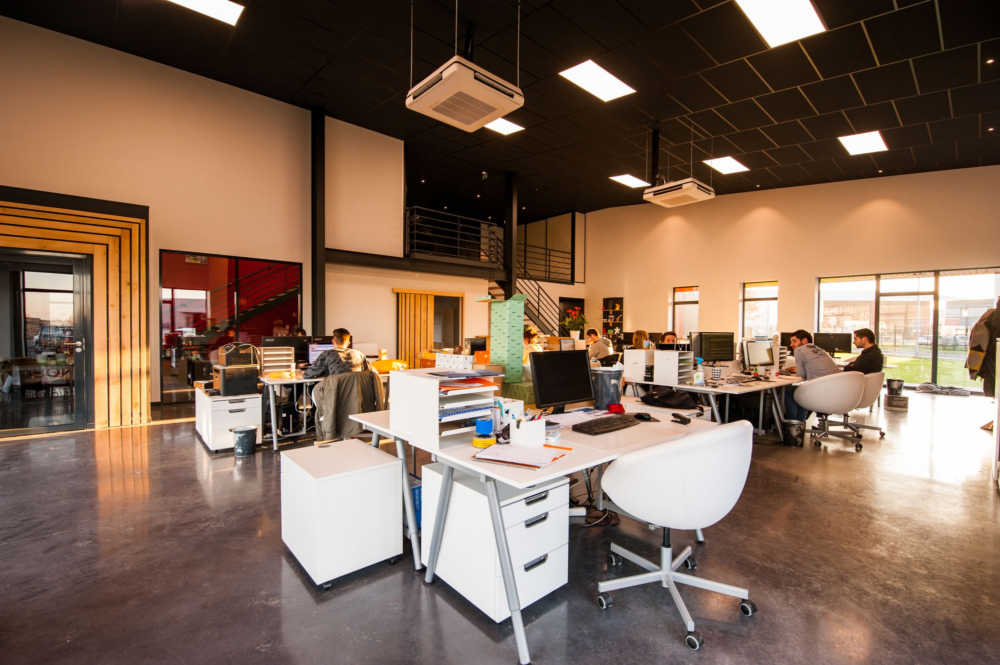

Professional services
A serious front door. Quiet systems behind it.
Websites, AI automation, and marketing for practices and local firms, so client work stays the priority.
Clients judge the practice before the first meeting. The site, the booking path, and the first reply should feel as considered as the work you deliver.
Most firms don’t lose trust because the advice is weak. They lose it because intake is messy: forms that go nowhere, calendars that don’t sync, follow-up that depends on whoever remembered to check the inbox.
We design the presence, connect calendars and CRM, and keep marketing moving, without turning your team into a content department.
Who this is for
Practices that win on trust and response.
Built for Okanagan firms where reputation is local, referrals still matter, and the next client often arrives while you’re already in a meeting.
-
Advisory & consulting
Firms that need a polished front door and intake that doesn’t stall between client sessions.
-
Local practices
Offices where booking, reminders, and clear next steps protect both the calendar and the brand.
-
Growing teams
Groups outgrowing ad-hoc follow-up, and ready for systems that don’t need a full-time marketer.
-

-
-
-
What we put in place
Presence, intake, and steady visibility.
-
Credible websites
Clean, mobile-first sites that explain the work, build trust quickly, and make it easy to inquire or book without a phone tag loop.
-
Client flow
Booking, reminders, and follow-up so intake doesn’t depend on someone remembering to chase. Connected to the calendar and CRM you already use.
-
Marketing & content
Social, search, and on-brand visuals handled so visibility doesn’t wait on spare evenings or a blank content calendar.

Day-to-day
The stalls we hear most often.
A serious inquiry sits overnight because everyone was in meetings. A consult gets booked, then forgotten until the no-show. A strong referral asks for next steps and gets a generic reply three days later.
That’s the path we map first: inquiry to booked to follow-through. Then we put the missing pieces in place without a heavy software rollout.
Next step
Tell us how intake runs today.
A free audit. Clear priorities. No hard pitch.